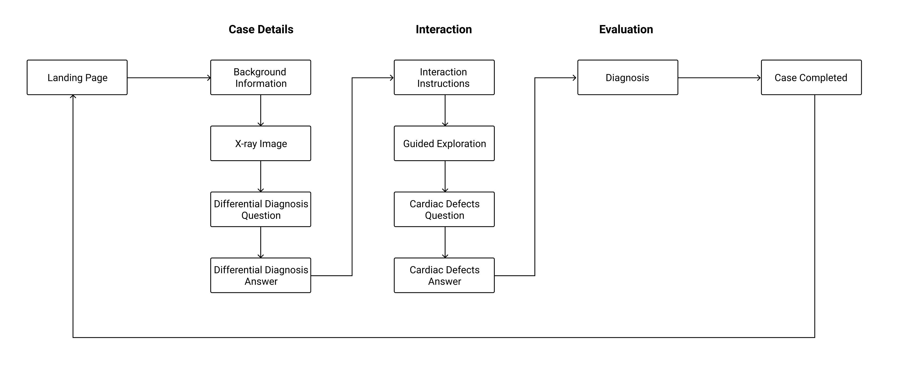

Designing an Online Learning Module
My Role
Low/High-Fidelity Prototyping, Ideation, Interaction Design, Back-end Development
Team
Andrew Le (me), Claire Say and Viswajith Unnikrishnan
Tools used
Figma, Illustrator, Github, Node.js, Handlebars, Storyblok, Heroku
Client
University of Sydney Children’s Hospital at Westmead Clinical School
The goal of this project was to design and develop an online learning module for second-year medical students to supplement their classes on the topic of congenital heart disease in babies.
The Problem
Traditional teaching of anatomy and pathology includes practical sessions with cadaveric samples, however, these samples degrade overtime and become less available due to improvements in screening and surgery.
Heart samples degrade overtime and are less available due to improvements in screening and surgery yet the increasing number of students each year increases their demand.
Students in rural areas do not have access to the samples.
Students are left to explore the samples independently after watching an old video about heart formation.
Users
Second year medical students learning about congenital heart deformities in babies. Students in the classroom will be using an iPad to access the module that should take about 30 minutes to complete.
Experienced doctors who may be older and not have much coding experience.
Process
We created wireflowed based on the content that needed to be shown. The module consists of four cases with each case divided into three sections: case details, exploration and explanation.

We did rough sketches to test out different forms of information hierarchy. These were valuable in learning how much information we could fit on the screen and what basic visual elements were needed.

We created low-fidelity prototypes on Figma to test the pacing of the application and the positioning of the interactive elements.

We received feedback that referring to the cases by their case numbers felt clinical, so we replaced it with their names to make it feel more personable.
The visual design took on a very friendly aesthetic when moving into the high-fidelity wireframes and decided to design for landscape orientation since the students will be using iPads.

Interaction Design
An interactive, virtual representation of the heart addresses the problem of accessibility, making the sample available even for students unable to attend the practical sessions in person.
The camera orientates itself to show students how to look at the heart according to the current instruction. This provides direct guidance to students, a lack of which was identified as a problem of how the module was conducted previously.
Structure and guidance is also provided by labels pointing to the relevant features of the heart. These disappear when features are out of view and can be toggled on and off by the student.
Outcome
After completing the project, our team was invited to present our design to the Sydney Medical School MD2020 Education Showcase where it was very well received. The application was then handed off to Westmead Clinical School.
You can take a look at the module here. The application is hosted on Heroku so it may take a while to load from an inactive state.